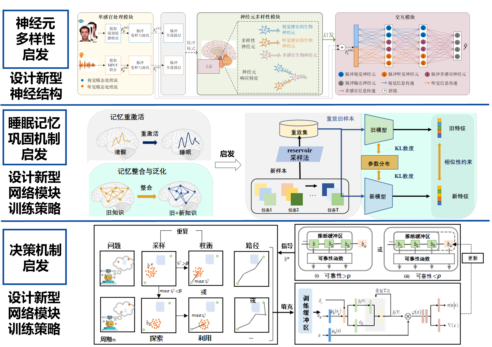

捕捉脑信号并将其转换为电信号，实现信息的传输和控制
赋能工业制造，建立跨任务算法，实现施工人员脑状态监测；赋能军事航空，建立跨被试算法，实现消防员脑认知测评；赋能医疗健康，建立跨站点算法，实现脑疾病辅助诊断。

图1：脑机接口研究
1.1 赋能国家基建
基于脑机接口技术与特征挑选算法，搭建人员安全监管数字化管理系统，实现对国家重点工程施工人员专注度、疲劳度等脑状态的监测与预警。
我司与邬霞教授合作开发的人员安全监管系统能够实时监测施工人员脑状态，有效实现安全预警。提供风险报告近400篇，发出风险预警和报警信息近2000条，成功抓取了3万多条风险隐患数据。
1.2 赋能医疗健康
与天坛医院、宣武医院等多家医院合作，快速提取功能性神经学标记物，赋能多个辅助诊断平台，目前已服务于近万名患者的疾病辅助诊断。
我院与邬霞教授团队联合开发"基于神经影像数据的抑郁症辅助诊断平台"……为2000余名患者的早期诊断和治疗提供帮助。
1.3 赋能国防强军
承担军委科技委等单位的项目，将脑功能运行机制应用于特殊岗位人才选拔与测评，已累计服务数千余名飞行员和消防员。该系统服务了我国多省数千名消防员，认知状态识别准确率≥90%，状态预警准确率≥99%。